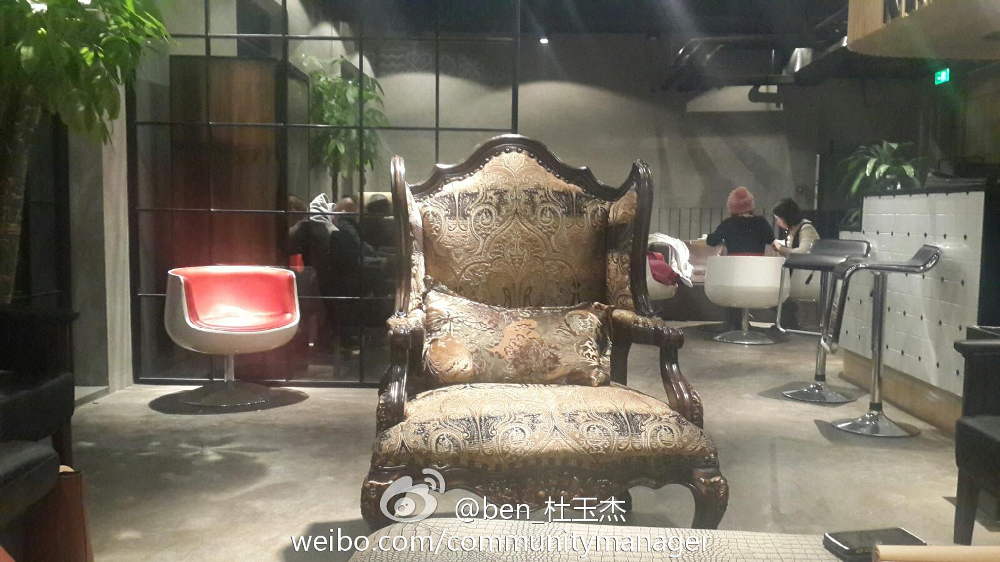

这张角度不错。我拍的可全是人，稍后上照片。@ben_杜玉杰:和csdn社区总监@Ada李力 金山开发者关系负责人@LukeFan 以及美团等同行集体吐槽中，爆点好多啊，哈哈～土豪的位置还空着，附近土豪速来。 我在这里:北京·3W互联网主题咖啡馆 
做社区的都挺能聊，聚会变成集体吐槽会了，从晚上7点到快12点，聊了三轮，二楼聊到三楼，三楼又转到二楼。我的收获大大地，不知大家如何？@Orson_Zhai @程开源 @我叫书婷 @ben_杜玉杰 @LukeFan @Tanthalas @三马 @潘少宁_腾讯_LAMP人 @string_tang
遇到@马德龙 ，说现在@拉勾网 是为了解决招聘市场中信息不对称的现状，至于怎么盈利，他不去想这个问题。— 互联网颠覆传统行业的做法都很一致，靠免费做大用户群，获得数据，最后终归有买单的，例如Instagram
#社区运营# @string_tang 说美团对开放平台的规划是五年期，不设KPI, 大家去试。试出效果后，就大面积铺开做。路子是快速试错，快速改进，快速复制成功经验。— 现在的运营问题就是很难复制，跟人的关系太大。
#社区运营# 社区做到一定阶段，都会面临变现问题，变现套路无外乎是项目，外包，咨询，培训和招聘。几位做社区的都不看好前三个，原因就是项目，外包，和咨询都属于定制化的业务，做起来很苦逼，难以复制，也难以规模化。一致认可培训和招聘才是出路。
#社区运营#传统的招聘公司是把各大公司的HR当最重要的资源，拿到招聘订单后，满世界去找候选人。而带有互联网思维的新型招聘，是维系好候选人关系，为这些候选人找下家。就是同样的B2B2C业务中，传统思维看重的是B，互联网思维看重的是C。
#社区运营# 几个人讨论到工程师文化，产品经理文化，设计师文化，这几个区别就是说做事儿，到底是谁说了算。很难说这几种风格孰优孰列，因为什么文化都是公司老大决定的，老大以工程师自居，就会是工程师文化，老大以产品经理自居，就会是产品文化。
这个新人值得效仿？//@风雨之坛:记得在做辽宁联通业务时，有很长一段时间联通大楼临街的电线杆挂满了辽宁移动的广告幅。联通继任的老总在上任第一时间召集市场部开会，训话务必将满街移动的广告在限定的时间更换为联通的宣传。上有令，下则行，只是都缺少联想市场部这位新人的心智与行动！@Ada李力:#市场部段子# 联想柳传志对市场部工作不满意。一新进市场部员工花很少的钱就做到了让柳总对市场部印象大为改观。他打听到柳总住处，在柳总家到公司的路上贴满了联想的广告。
//@我叫书婷:期待下次…//@三马:很高兴认识北京社区圈的朋友，@3W咖啡 是一块宝地 //@潘少宁_腾讯_LAMP人:很开心认识了翟京，宇超，还有君毅三位新朋友。也很开心见到了老朋友！下次再续！//@Orson_Zhai:槽点很到位,颇有心得@Ada李力:做社区的都挺能聊，聚会变成集体吐槽会了，从晚上7点到快12点，聊了三轮，二楼聊到三楼，三楼又转到二楼。我的收获大大地，不知大家如何？@Orson_Zhai @程开源 @我叫书婷 @ben_杜玉杰 @LukeFan @Tanthalas @三马 @潘少宁_腾讯_LAMP人 @string_tang
同学最近很苦恼，校长换了，她有些不适应，已有些心灰意冷。家里又出现些变故，不能像以前那样狂加班，偏偏领导又给加重任，推掉恐以后更无上升机会，不推责实在心力跟不上。— 俺不给意见，这事儿得自个儿把自己说明白了，无论选哪条路，不纠结为上。
回复@黄小非:同学找我吐两晚上的槽了。其实很多时候大家的情况类似，哪个选择都有利有弊，没有对错。我的选择往往粗线条，更多是跟着感觉走，选后就不再回头看，不说什么后悔的话，把当下的事情做好就OK啦。 //@黄小非:咦？好像信息量很大的样子@Ada李力:同学最近很苦恼，校长换了，她有些不适应，已有些心灰意冷。家里又出现些变故，不能像以前那样狂加班，偏偏领导又给加重任，推掉恐以后更无上升机会，不推责实在心力跟不上。— 俺不给意见，这事儿得自个儿把自己说明白了，无论选哪条路，不纠结为上。
@鹿泽光:晚上老婆说要分担家务，就问我：洗碗跟拖地你选哪个？我说洗碗。洗完碗后老婆又问：洗小孩跟拖地你选哪个？我说拖地。拖完地老婆又问：洗衣服和洗小孩你选哪个？我说洗小孩。洗完小孩老婆又问我：洗衣服带小孩睡觉你选哪个？我说洗衣服。洗完衣服看到老婆和孩子睡着了我忽然觉得好像哪里不对。
对#社区运营#来说，最大的短板是策划。对策划的理解，淘宝的重阳认为，“策”说的是方案，想法，创意，这些想的层面，而“划”说的是项目管理，用户体验设计，沟通，危机处理，这些做的层面。— 这么广义的策划定义，基本涵盖了运营要干的事儿。
应该请@八爪李炯明 给你洗洗脑。[呵呵]//@程开源:尝试做过一段时间人才推荐，后来发现做社区又做猎头会让我人格分裂。 还有更重要的是猎头业务不益于品牌的长期积累。@潘少宁_腾讯_LAMP人 @三马@Ada李力:#社区运营# 基于社区做培训和招聘，@程开源 认为培训更符合他的理念，而招聘则是卖人，用挖人方的获得损害了被挖公司的利益，违背社区精神。这也引发了讨论。
//@TMT大姨妈:某运营商为了保证某高管家里信号好，瞒着高管对附近基站进行了有指向性的调优。至于指向嘛，就是该高管家的窗户。网优的人私下里开玩笑说，高管家里人身体都好，是对基站辐射致病的最好反驳 //@付亮的竞争情报应用:盛大也太国企了@Ada李力:#市场部段子# 陈天桥常常上网访问盛大的服务，遇到问题就会把相关人叫来训斥。有段时间他在新加坡，为此盛大有关部门特地在新加坡为他架设了台服务器，好让他感觉访问盛大服务速度还是很快滴。